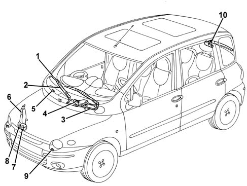

Introduction - SCREEN WASHERS AND HEADLAMP WASH/WIPE
- Path
- Descriptions > 50 AUXILIARY UNITS > 5050 SCREEN WASHERS AND HEADLAMP WASH/WIPE > Introduction - SCREEN WASHERS AND HEADLAMP WASH/WIPE
- Kind
- system description
- Applies to
- all engines; all production periods
- Interactive page
- https://sloeber94.github.io/elrnDB-fMltpl/en/#/2892449
Applies to: all engines; all production periods
The system for cleaning the windscreen and the headlamps makes use of the following components:
- windscreen wiper
- windscreen washer
- headlamp washer.
- rearscreen wiper
- rearscreen washer

1, Windscreen wiper blade 2, Wiper arm 3, Windscreen wiper mechanism 4, Windscreen wiper motor 5, Windscreen washer jets 6, Reservoir 7, Windscreen washer pump 8, Headlamp washer pump 9, Headlamp washer jets 10, Rearscreen wash/wipe
Windscreen wiper
The windscreen wiper mechanism has been developed to ensure optimum cleaning of the area covered by the wipers and to allow the blades to always work in the correct conditions (wiping angle, pressure on the windscreen).
The windscreen wipers are operated by a lever on the right of the steering wheel and can assume five positions:
- windscreen wiper switched off
- intermittent operation;
- continuous slow operation;
- continuous medium-fast operation;
- temporary fast operation (unstable stalk position).
Windscreen washer
The windscreen washer function is operated by pulling the lever gently towards the steering wheel. The electric pump is operated in this way and it sends the fluid, under pressure, to the jets at the front of the windscreen.
If the lever is kept in this position, the windscreen wipers will come on constantly. When the lever is released, the windscreen wipers will continue to operate for several strokes.
Headlamp washers
The headlamp washer system consists of a special electric pump on the windscreen washer fluid reservoir, connecting pipes and two jets in the bumpers in front of the front light clusters.
The operation of the headlamp washers takes place automatically when the windscreen washer is switched on, but only if the dipped headlamps are switched on.
The electric pump is controlled by a timer which activates the operation with succesive impulses lasting around half a second.
Rearscreen wiper
The rearscreen wiper has also been developed to ensure optimum cleaning of the area covered and to always work in the correct conditions (wiping angle, pressure on the glass).
The rearscreen wiper is operated by turning the ring nut on the end of the lever located on the right of the steering wheel. The operation is intermittent.
Rearscreen washer
By pushing the lever gently towards the steering wheel the rearscreen washer function is activated; the same pump is used as for the windscreen washer, but it rotates in the opposite direction and sends the detergent fluid to the rear.
If the lever is kept pressed, the rearscreen wiper comes on and operates for a few moments after the lever is released.